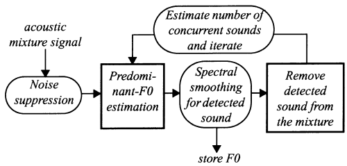
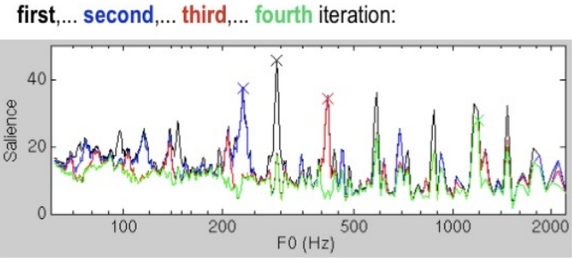

Week7-10 Automatic Music Transcription
TBC: 这份笔记还非常欠整理！
AMT Tasks:
-
Pitch Estimation (frame-level):
-
Monophonic: From a single sound source.
- Polyphonic: From multiple sound sources.
- Melody Estimation: Single melodic pitch estimation from multiple sound sources.
- Note Transcription (note-level): Based on frame-level pitch estimation, identifies a note by detecting the onset and offset.
- Sheet Music Generation: Based on note transcription, requires additional information like metric analysis, key detection, notes, and expressions.
1. Monophonic Pitch Estimation
I read this great note in simplified Chinese to fully understand this section.
When a tone is generated with a pitch, the waveform is periodic and the spectrum is harmonic. Pitch is often referred to as fundamental frequency or "f0" (f0 = 1 / period).
Traditional Approaches:
- Time-Domain: Estimate the period of the waveform. Calculate the distance between a segment in a fixed window and another segment in a sliding window, and find the time difference (lag) that makes the best match. e.g. YIN algorithm
- Frequency-Domain: Exploit the harmonic pattern
- Cepstrum: Too complex to explain in English here. No need to understand this I think, just used the encapsulated functions.
ML Approaches: CREPE is the state-of-the-art pitch estimation using CNN on a frame of raw audio waveform.
Post-Processing: removing the outliers in the attained sequence of f0 at each time point
- Median filtering
- Viterbi decoding
Melody Extraction is a more complex task of extracting melodic pitch contours from polyphonic music. Methods include:
- Salience-Based Approach: Utilizing a saliency function (like HPS) to find the pre-dominant pitch.
- Source Separation Approach: Separating the melodic source and using monophonic pitch estimation.
- Classification-Based Approach: Utilizing CNN or CRNN, input a frame in the spectrogram, and let the model select the most possible f0 in a given range. The CRNN can be updated to LSTM or other recurrent networks.
2. Multi-Pitch Estimation & Note Transcription
Multiple Pitch Estimation: Polyphonic pitch estimation from multiple sound sources.
AMT Model Challenges:
- Many sources are mixed and played simultaneously
- They are likely to be harmonically related in music
- Some sources can be masked by others
- Content changes continuously by musical expressions (e.g. vibrato)
- Labeling is time-consuming and requires high expertise
- Supervised learning is limited (piano transcription is a special case)
- Sheet music can be used as "weak" labels with the score-to-audio alignment
- Multi-track recording with monophonic pitch estimation
Methods
- Iterative F0 search: DSP
- Joint source estimation: NMF
- Classification-based approach: ML/DL
Iterative F0 Search: Repeatedly finds predominant-F0 and removes its harmonic overtones.


Procedure:
- Set the original to the residual.
- Detect a predominant F0 based on pitch templates.
- Spectral smoothing on harmonics on the detected F0.
- Cancel the smoothed harmonics from the residual.
- Repeat steps 2 & 3 until the residual is sufficiently flat.
NMF-based Spectrogram Decomposition
- Spectrogram can be approximated with an additive sum of pitch templates and the corresponding temporal activations.
- They can be regarded as a non-negative matrix factorization.
Classification-based Approach
- Quantize the pitch output into discrete label vectors.
- Multi-label classification.
- 88 binary state output (note on/off).
- Use the sigmoid output.
- No prior knowledge of musical acoustics.
Note-Level Transcription
- Convert continuous pitch streams into note events.
- Use the frame-level pitch estimation.
- Explicit onset detectors can be added but they are very hard.
- Note modeling algorithms to prune, merge, and divide frame-level predictions.
- Rule-based approach: thresholding, median filtering.
- Statistical approach: HMM.
Onsets and Frames
- Joint learning of onset detection and pitch estimation for polyphonic piano transcription.
- Two CRNN branches.
- Onset network: detect the onset of multiple notes.
- Frame network: detect on/off states of multiple notes.
- A connection from the onset prediction in the onset network to the input of RNN in the frame network.
Autoregressive Multi-State Note Model
- Use a single CRNN with the softmax output that predicts multiple note states at once (off, onset, sustain, offset, and re-onset).
- Autoregressive unidirectional RNN for real-time inference.
U-Net based Multi-Instrument AMT
- CNN-based Encoder-Decoder.
- Proposed for image segmentation.
- Use it for “note segmentation”.
- Self-attention for instrument detection.
Seq-to-Seq Model
- A generic encoder-decoder Transformer with standard decoding methods.
- Represents the MIDI output with text-based token sequences.
MT3
- The same seq-to-seq model that supports multi-task AMT.
- Add the “program change” token to the output to change instruments.
- This allows the model to handle an arbitrary number of instruments.
Datasets
- Piano:
- MAESTRO: large-scale real performance.
- MAPS: synthesized piano.
- Saarland Music Data (SMD): real performance.
- Multi instrument.
3. Audio-to-Score Alignment
Score and Performance
- MIDI (score)
- Differences in performances (e.g., Valentina Lisitsa vs Vladimir Horowitz)
- Tempo variations
- Dynamics (volume, note-level accent)
- Articulations (legato, staccato)
- Timbre variations
Audio-to-Score Alignment
- Aligning audio and score in a piece of music
- Can also be audio-to-audio or MIDI-to-MIDI
- Applications:
- Performance analysis
- Performance assessment
- Score following (real-time alignment)
- Automatic labeling for automatic music transcription tasks
Algorithm Overview
- Convert score (MIDI) to audio using a synthesizer
- Extract audio feature sequences from waveforms
- Chroma feature commonly used
- Compute similarity matrix between two audio feature sequences
- Find optimal alignment path using dynamic time warping (DTW)
Dynamic Time Warping (DTW)
- Finds the optimal path of length L that has minimum cost in an N x M matrix
- Conditions:
- Boundary condition: p1=(1,1), pL=(N,M)
- Monotonicity condition
- Step size condition (move upward, rightward, or diagonal upper-right)
Audio Feature Extraction
- Chroma feature captures timbre-invariant tonal characteristics
- CENS: Normalized Chroma Features
Similarity Matrix
- Compute distance between all pairs of frame-level feature sequences
- Use Euclidean or cosine distance
Finding the Optimal Alignment Path
- Numerous possible paths from one corner to another
- Finding optimal alignment path is like searching for a trail route with minimum efforts when hiking
Dynamic Programming for DTW
- Algorithm involves initialization, recurrence relation, and termination
- Minimum cost is computed using a specific equation
- Minimum-cost path can be found by tracing back the computation
Application: Performance Analysis
- Visualization of tempo and dynamics in piano performances
- PerformScore Visualization
Online DTW
- DTW works offline, but what if we want to align audio to score in real time?
- Procedures include setting a moving search window and calculating cost only within the window
- Movement is determined by the position that gives a minimum cost within the current window
Review of Pitch Estimation
- Can be viewed as a task that finds the best pitch sequence from audio stream
- Pitch estimation algorithms usually rely on local predictions
- Can we jointly predict the entire pitch sequence?
Hidden Markov Model (HMM)
- Hidden states based on the Markov model
- Given a state, the corresponding observation distribution is independent of previous states or observations
Learning HMM Parameters
- HMM parameters include initial state probabilities, transition probability matrix, and observation distribution
- If labels are aligned with audio, estimate them directly from training data and local estimation
Evaluating HMM
- Find the most likely sequence of hidden states given observations and HMM parameters using dynamic programming
Viterbi Decoding
- Define a random variable that maximizes the probability at a certain state
- Involves initialization, recursion, and termination
- Post-processing for pitch estimation
4. Rhythm Transcription
Introduction
- Definition: Automatic Music Transcription (AMT) is the process of converting an acoustic musical signal into some form of musical notation.
- Challenges: Polyphonic music transcription is considered one of the most challenging problems in the field of Music Information Retrieval (MIR).
Rhythm Transcription
- Rhythm: The pattern of sounds and silences in music, involving the aspects of timing and beat.
- Importance: Rhythm is a fundamental aspect of music and is crucial for understanding the temporal structure of a musical piece.
Onset Detection
- Definition: Identifying the beginnings of musical events.
- Importance: Onset detection is the first step in rhythm transcription and is crucial for further analysis like beat tracking.
- Methods: Various methods are used for onset detection, including spectral flux, phase deviation, and complex domain methods.
Temporal Analysis
- Objective: To analyze the temporal structure of a musical piece.
- Methods: Different methods are used for temporal analysis, such as autocorrelation, comb filter, and Fourier tempogram.
Beat Tracking
- Definition: Determining the times at which beat events occur.
- Importance: Beat tracking provides a temporal grid that can be used for further rhythmic and structural analysis of the music.
- Methods: Different algorithms are used for beat tracking, including dynamic programming and probabilistic models.
Evaluation Metrics
- Objective: To measure the performance of rhythm transcription systems.
- Metrics: Various metrics are used for evaluation, including F-measure, Cemgil’s accuracy, and Goto’s accuracy.
Applications
- Music Information Retrieval (MIR): AMT is used for retrieving music information and is crucial for various MIR tasks.
- Music Education: AMT can be used as a tool to assist in music education, helping students and teachers in understanding and learning music.
- Music Production: AMT can be utilized in music production for tasks like editing and arranging music.
Conclusion
- AMT is a challenging problem due to the complexity of musical signals and the diversity of musical genres.
- Rhythm transcription, which includes onset detection, temporal analysis, and beat tracking, is crucial for understanding the temporal structure of music.
- Various methods and algorithms have been developed for rhythm transcription, and it has various applications in MIR, music education, and music production.
5. Chord Recognition
Introduction to Chords
- Chord: A harmonic set of multiple notes that accompany the melody, providing perceptual and emotional richness.
- Musical Progress: A sequence of chords forms a progression, e.g., I-V-I, I-ii-V-I.
- Consonance and Dissonance: Two sinusoidal tones are dissonant if their frequencies are within 3 semitones (minor 3rd). Consonance and dissonance between two harmonic tones are determined by how much their harmonics overlap within critical bands.
Chord Construction and Scales
- Chords are formed by stacking major or minor 3rd intervals, resulting in triads, 7th chords, 9th chords, etc.
- Major Scale: Formed by spreading notes from three major chords.
- Minor Scale: Formed by spreading notes from three minor chords, with variations like harmonic or melodic minor scales formed using both minor and major chords.
Tonal Music
- Tonal music, which comprises the majority of music, has a tonal center called a key (tonic note).
- There are 12 keys (C, C#, D, …, B), and each note on the scale has a different role determined by its relation with the tonic note.
Automatic Chord Recognition
- Traditional Methods: Include template-based pattern matching.
- Classification-based Methods: Involve supervised learning using a classification model, with outputs being one-hot class of chords or a structured form.
Template-based Pattern Matching
- Utilizes the similarity between chord vector and binary templates for each chord.
- Employs correlation (inner product) between chroma vectors and templates.
- Frame-based prediction from the maximum correlation values does not consider the temporal dependency of chord progressions.
Hidden Markov Model (HMM) for Chord Recognition
- Uses Viterbi decoding with local prediction from chord template matching, transition probability calculated as chord labels (chord progression), and initial probability as chord distribution.
Deep Chroma
- Supervised feature learning of chroma, using 15 frames of quarter-tone spectrogram as input and employing Multi-Layer Perceptron (MLP) with 3 dense layers of 512 rectified units.
- Output: Chord labels.
- Deep Chroma vs. Hand-Crafted Chroma: Deep Chroma offers precise pitch activations and low noise while maintaining crisp chord boundaries.
Chord Recognition: CRNN
- CRNN-based chord recognition uses the Gated Recurrent Unit (GRU) for RNN.
- Structured chord labels represent the chord notation with binary vectors of root, pitch, and bass fields, with root and bass fields using softmax and the pitch field using sigmoid.
Resources